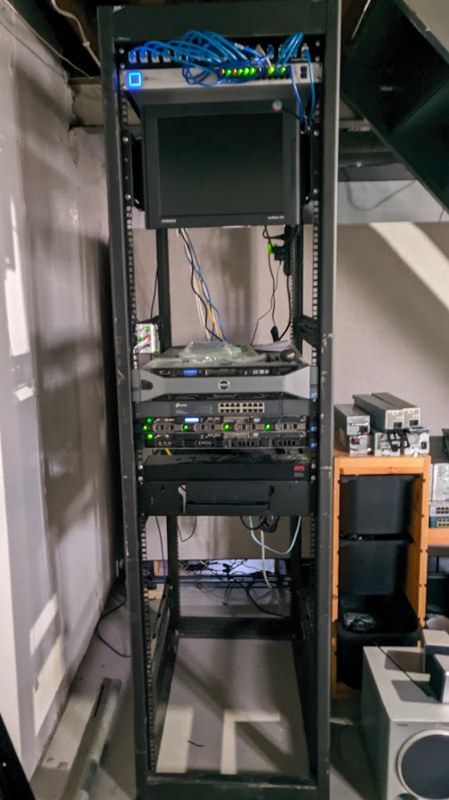
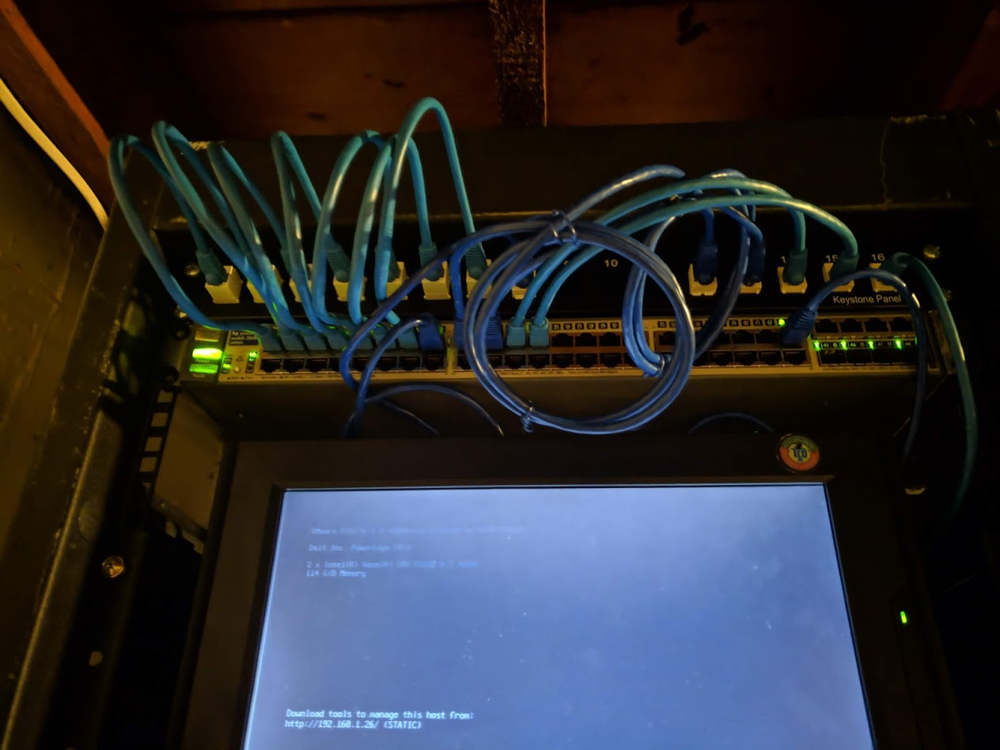
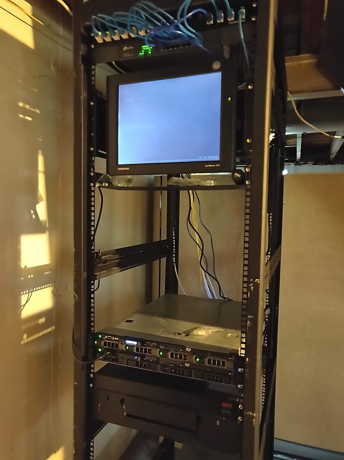
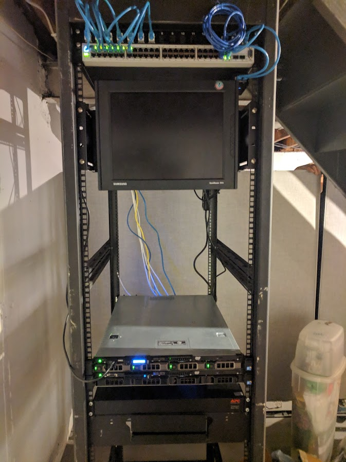
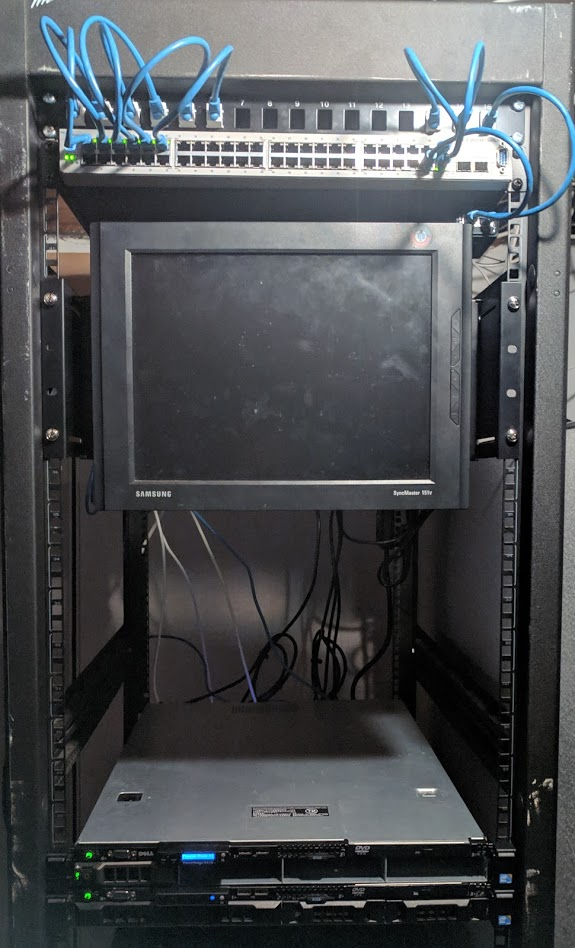
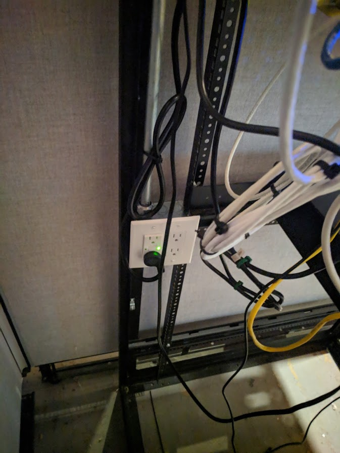
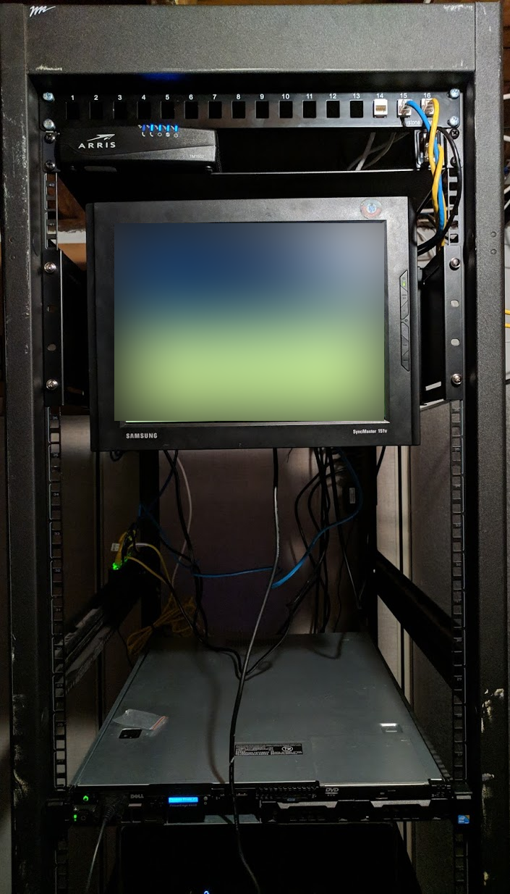
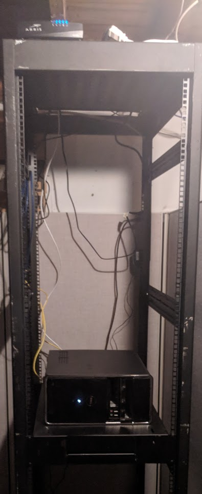
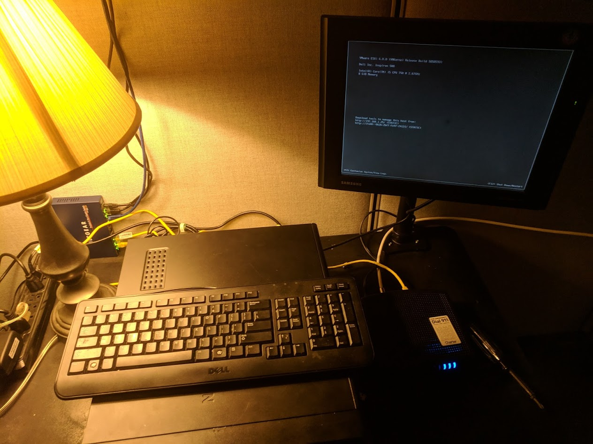

A History of my homelab, from beginning to present day.
For a while, I'd been thinking about investing in a 3D printer of some sort. After discussing with some colleagues I decided on an Ender 3 Pro.
It's a solid budget-printer with all the features I wanted straight out of the box. Offering a removable flexible print-bed, and just enough print-area.
I rigged it up to be operable via OctoPrint hosted on the workstation next to it on the workbench. I can effectively control it from anywhere, as well as record timelapses of my prints.
Getting a stable baseline was tricky, but after tons of troubleshooting, I have a solid 3D-printing device for use in the lab, whether it be printing parts, or fun little toys.

For a while, I had felt that things had "stagnated" in the lab, so I wanted to start a new project. This new project resulted in the addition of VoIP to my lab environment.
I initally invested in some Cisco 7961-GE's to get introduced to VoIP/SIP/PBX and they worked pretty spot-on for a while. I also picked 3CX as my PBX/SIP solution.
After experimenting with what I had, I decided to take it a step further and purchase a SIP Trunk and allow out-bound calling from my lab to further my experiment.
After that, I was introduced to a model of VoIP / Cloud PBX phone called the Cisco Meraki MC74. This phone was a cloud-managed VoIP phone for enterprise networks. I invested in two of them, and began work to integrate them into my lab.
Essentially, they're touchscreen deskphones that run Android, so I can load whatever SIP client I want and connect to my PBX server. The whole process is documented on github here.
The project is still on-going, but so-far it's been a runaway success. I've got both phones successfully connecting to my 3CX PBX Server, and have been actively contributing to the project on Github.

A month-or-so ago, FreeNAS annouced that they were merging with TrueNAS a seperate project, which is very similar to FreeNAS.
As a result, I had to come up with a plan to migrate from FreeNAS to TrueNAS. I decided my best route would be to do a ZFS replication-based migration from FreeNAS to TrueNAS using the built-in replication tools.
After doing so, I attempted, several times, to migrate my NextCloud install from my FreeNAS VM to my TrueNAS VM, but it kept throwing errors, and was unable to be upgraded, so I ended up rebuilding it entirely.
Another thing that was put into consideration was data-redundancy, and protection. I ended up moving my NAS solution from my R410 to my R710 for RAID-based protection.
In the end, I had upgraded to TrueNAS 12.0 and NextCloud 19, a total success, and no important data was lost in the migration. üëç
After lengthy planning and strategizing, I had a plan.
Most, if not all, of the patch cables I ran inside the rack connecting the servers to the switch, and connecting the other devices to the network were either ruined, destroyed, or just unfit for reinstallation.
All of the equipment somehow survived, including all the servers, spare networking equipment, and the electrical wiring and circuitry for the rack.
I had to make a decision in regards to how I wanted to re-run, cable, and manage the patch cables on the rack that would be more efficient and cost-effective than last time.
I decided that I would purchase patch cables off Amazon, (Roughly $17/10 10ft Cat-5e, and $15/10 1ft Cat-5e) and also invest in a label printer to label every cable for disassembly/reassembly purposes.
After rewiring the rack, labeling everything, and ensuring cables were secured in a neat and orderly fashion, I was able to effectively bring the lab back to functioning order.
I'm personally pretty happy with how it came out, I now know where each keystone jack goes, the cables are grouped by function and are labled at each end.
Also, that label printer is pretty cool IMHO, totally worth the investment. It prints literally anything and has so many presets.
And I thought it was just perfect... Until....
I was over at my partner's house when I had been notified that my basement (The location of the server rack) was slowly flooding with water that had built up from the non-stop rain we had been getting that week.
In response, I immediately returned home and started removing all of my equipment from the installation location in an effort to save it from liquid exposure.
As a result, I practically ripped the equipment out yanking cabling and scattering everything, leaving the lab in complete chaos and unfunctional.
I struggled to get a feasable internet connection using the little equipment I had, but I managed to hack together a 10/100 Wireless N router with DD-WRT on it to patch into our modem downstairs to provide internet to my parents.
As for my lab, I had some work to do to bring it back into service after we corrected the flooding issue...
.jpg)
Built a desk-space for working on the servers, as well as brushing up on my Cisco material.
The Lenovo T60 is a terminal that runs Windows 7 Pro and remotes into a VDI VM that runs Windows 7, so that it can interface with the rest of the network (It's isolated.)
Considering getting that JBOD running, I did the math and it can handle 26TB alltogether if I decided to run it in the lab for additional space.
Swapped out the old HP Procurve 2448 for a Ubiquiti Switch 24 to keep the network Infrastructure mostly Ubiquiti hardware.
I picked up a Dell R710 from a new friend who works at VMware, super nice guy, just gave it away! Fully loaded with 128GB of RAM, dual Xeon X5670's and 12TB of SAS Storage.
Switched ISP's to AT&T for their "Gigafiber Service" promising 1000/1000 (Full Duplex) speeds. Required install of the ONT pictured below.
I also joined the RIPE NCC foundation's probe program! Allowing me to help with research conducted in Europe relating to RIPE's service quality!
Replaced the TP-Link "Dumbswitch" with an HP Procurve 2448 to allow for future VLAN implementation as well as add SFP fiber ports for future upgrades. (Future Proofing Upgrades)
Picked up the switch, as well as some older Cisco hardware from a friend who works at Scott Airforce Base under the DoD (Department of Defense) as a contractor.
Well, that sucks. Alot.
The Avaya / Nortel switch that was servicing my network experienced a failure which required immediate replacement to resume operations.
So, for the time being I replaced it with a TP-Link 24-port "Dumbswitch" to get things going again until I could replace it.
I made some poor decisions in regards to where to place the rack in relative positition to the house. For whatever reason, I thought it was a great idea to put the rack under the bathroom upstairs.
After rewiring most of the drops (Cat-5e Ethernet Keystones) throughout the house, I moved the rack to a more "dry location" and rewired it all up. (Alot neater this time =])
I also picked up a nice APC PDU that allows me to reboot server(s)/the switch remotely via a web interface as well as added power-filtering for equipment safety peace of mind.
After obtaining my Dell R410, I started to realize just how much money I was throwing at some "dream" I had and said screw it and continued to dump money into this project aimlessly.
I had a friend who worked for a local company who was selling an R310, and I thought it would be PERFECT for a network operations server (Routing, DNS, VPN, etc.) and I immediately added it to the lab.
Hell, the server even came with a free Avaya/Nortel switch! 48 ports and only 9 devices to attach to it! Overkill as hell, but why not!
Quickly, me and my father both realized that this "homelab" is going to absolutely guzzle power, and at the time it was on a circuit that had alot of other things on it.
That just wouldn't work. Together, he and I installed a new circuit into our electrical panel, giving the lab it's own breaker and electrical line.
We installed, into the existing electrical box that came with the rack, two GFCI outlets and a new pipe to contain the electrical wire, isolating it from the lower-voltage lines that went inside the rack.
Shortly after purchasing that rack, I had already ordered a Dell Poweredge R410 from a seller off eBay to start off with. My very first server!
With a measly 12GB of DDR3-ECC RAM, an Intel Xeon E5620, and a 500GB HDD I picked up the same day from Microcenter to work with, I had to be very picky with what I ran.
I continued to run the older Dell Inspiron tower for core services like routing, DNS and VPN access below the R410.
I also added some rack-hardware like a keystone panel and a shelf for connecting to drops I had started to install throughout the house.
A friend of mine who worked in IT messaged me in regards to selling a full-height 43u rack. I had absolutely no idea what I'd do with it, but part of me said do it.
After getting it downstairs, I had the idea that this was going to be something BIG.
We all start somewhere right? Well, this is where my story began...
It all began with a desktop tower, a Dell Inspiron 580 to be exact. It only had 8GB of RAM, 300GB of space, and an Intel i5 750. (Yes, I upgraded it.)
Not much to work with here, right? Well, I squeezed every possible resource out of that thing, running pfSense, piHole, OpenVPN, and a NextCloud VM all at once! It was hardly able to keep up with all of that!
This little dinky thing managed to run all of that, but it was struggling and I wanted More! More space, more power, more everything! So much potential, yet nowhere to utilize it!
That sparked something in me that has come to show me exactly what I'm capable of, running my very own homelab with more space than I'd ever need.
